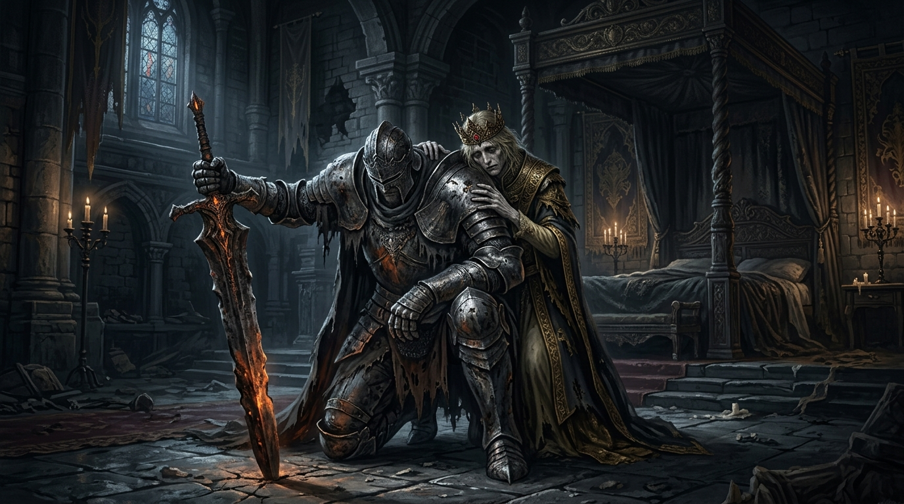
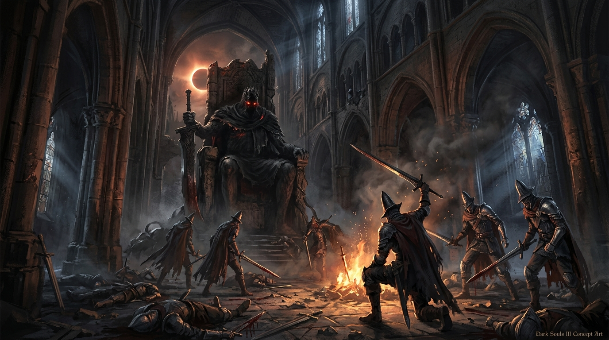
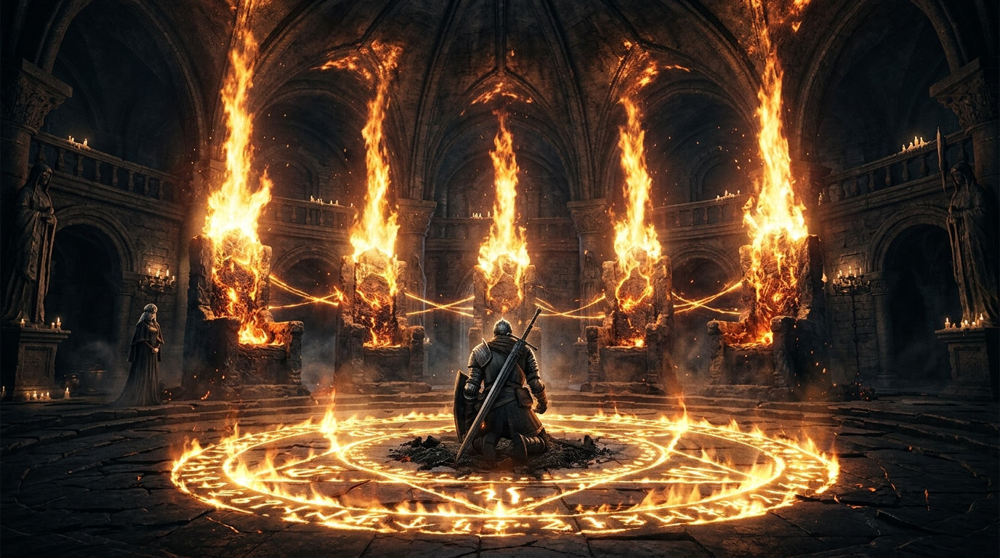
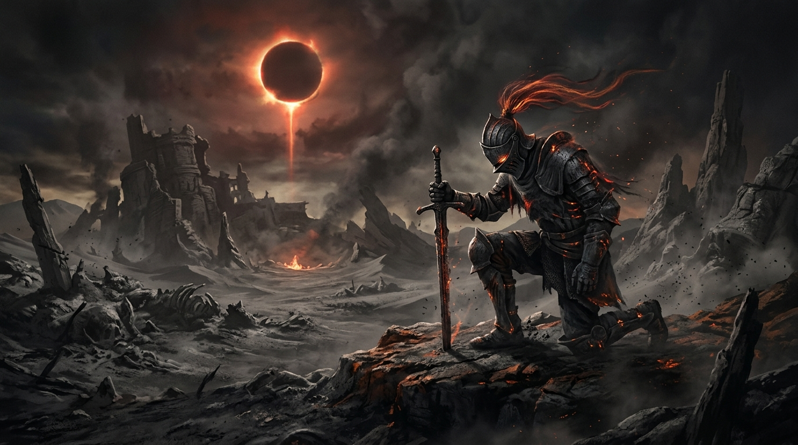
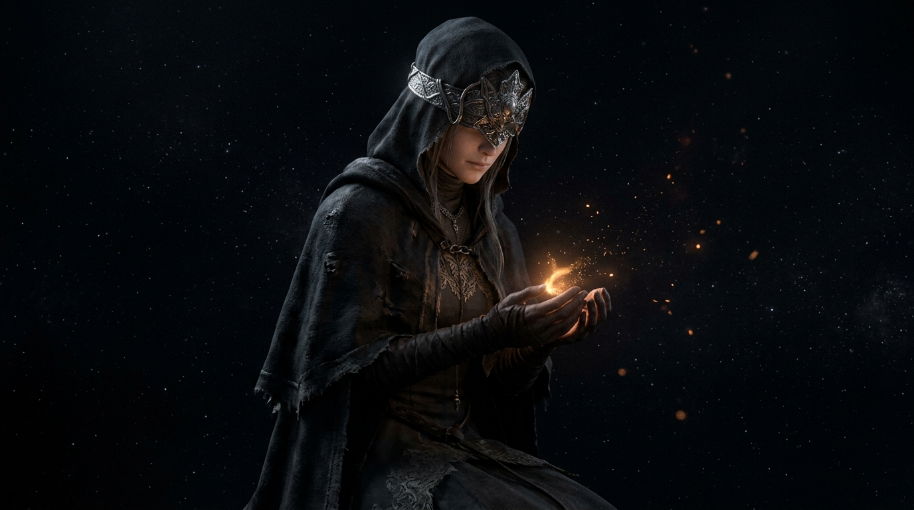
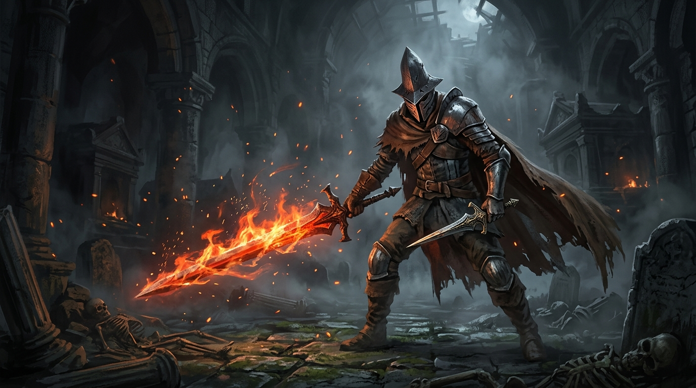
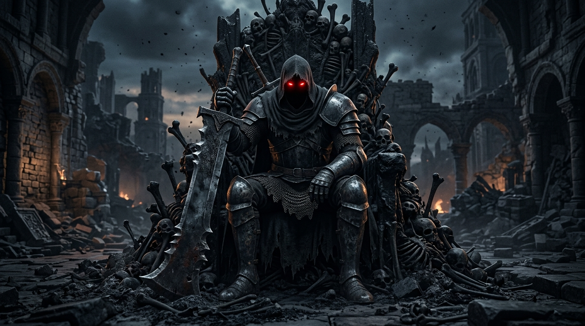
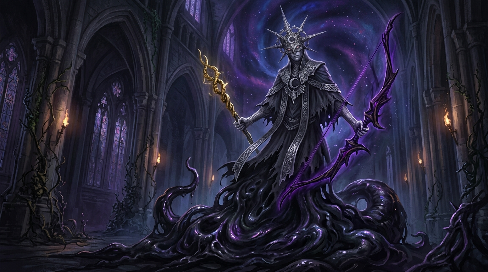

剧情因果关系拓扑链 (The Causality Chain)
1. 葛温投火开启诅咒
为维系神权统治，神王强行以身投火，立下“千年一献祭”铁律，众生背负不死人枷锁。
2. 双王子看透骗局摆烂
初火油尽灯枯！现任法定继承人看透神权血祭虚妄，坚决拒绝登上王座，初火濒临断电。
3. 唤醒薪王集体罢工
古钟敲响强行掘墓，四位曾自焚过的老薪王全都不愿再次当柴，全体撂挑子逃回老家封地。
4. 唤醒余灰物理催债
启动终极备选机制唤醒无火残渣！薪王不回王座？余灰踏遍天下直接斩首，强行把柴薪按回座！
5. 斩灭历代执念化身
在流血暗日之下与薪王们的化身决战，钢琴三连音响起，亲手战胜过去千万年强加于世的枷锁。
6. 托付防火女静候新生
放弃毫无意义的残火苟延，初火归于沉寂长夜。在漫长的黑暗尽头，微小而清澈的新火终将重现！
分幕章节跳转 (Click to Seek)

初火油尽 · 薪王集体撂挑子
现任双王子直接摆烂拒传！祭祀场敲响古钟强行唤醒往昔老薪王，大佬们全体罢工逃回老家！

四大薪王 · 宁死不当耗材
全是不堪回首的血泪教训！不死队同门自残、尤姆臣民皆亡、埃尔德里奇深海食神、双王子誓死拒当柴！

无火余灰 · 叫醒淘汰者物理催债
连当柴资格都没有的淘汰者苏醒！既然薪王不肯自己走回王座，那就踏遍天下全部砍翻，把柴薪按回原位！

初始火炉 · 薪王化身与流血暗日
时空坍塌，苍穹悬挂淌血暗日！守门人是千万代传火英雄执念的集合体，当凄美钢琴三连音响起，宿命悲歌彻底引爆！

灭火归真 · 斩断诅咒静待破晓
初火油尽灯枯，盲目传火毫无意义！托付初火给防火女，让万年病态诅咒彻底熄灭，在漫长深邃的黑夜尽头，静候清澈新生！
实时字幕对齐与旁白速览 (Click line to Jump)
Nano 关键角色与场景原画展 (Click to Zoom)



HYPERFRAME 视频生成工程架构
本视频基于 Hyperframe + GSAP 3 视听渲染引擎全自动编排与渲染
COMPOSITION ARCHITECTURE
多幕分段式嵌套架构，独立分幕解耦，零进度条沉浸设计，保证高可维护性与高对比度排版。
AUDIO SYNCHRONIZATION
YunjianNeural 慷慨激昂语音合成，自研管弦暗黑声景、青铜重钟与钢琴三连音四轨分层混音。
VISUAL ASSET PIPELINE
Nano 级黑魂概念原画多尺寸渲染，平滑 Ken Burns 镜头推拉与逻辑拓扑卡片平滑流转动效。
STATIC WEB DEPLOYMENT
无缝部署至 GitHub Pages，集成毫秒级章节定位、时间戳同步字幕高亮与原画灯箱浏览。